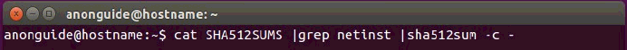

دانلود دستی و آماده کردن دبیان بر روی Ubuntu
۱. در ابتدا یک شل ترمینال را باز کنید برای اینکار بر روی Dash اوبونتو که در سمت چپ و بالای صفحه قرار دارد کلیک کنید.
۲. زمانی که ترمینال باز شد در آن کلید امضای CD دبیان را وارد کنید:
gpg --keyserver hkp://hkps.pool.sks-keyservers.net --recv-keys DF9B9C49EAA9298432589D76DA87E80D6294BE9B
اگر عملیات موفق آمیز بود خروجی چیزی شبیه تصویر زیر خواهد بود.
۳. حالا نوبت تأیید اثر انگشت کلید امضای سی دی دبیان است. تایپ کنید:
gpg --fingerprint DF9B9C49EAA9298432589D76DA87E80D6294BE9B
خروجی باید چیزی شبیه به تصویر زیر باشد اگر نبود مرحله دوم را از ابتدا شروع کنید.
۴. حالا نوبت دانلود ISO نصاب دبیان است.
اگر پردازشگر شما ۳۲ بیتی بود یا ۴ گیگ یا کمتر رم داشتید تایپ کنید:
wget -c https://cdimage.debian.org/mirror/cdimage/archive/7.11.0/i386/iso-cd/debian-7.11.0-i386-netinst.iso
وenter کنید.
اگر پردازشگر شما ۶۴ بیتی بود دستور زیر را تایپ و Enter کنید:
wget -c https://cdimage.debian.org/mirror/cdimage/archive/7.11.0/amd64/iso-cd/debian-7.11.0-amd64-netinst.iso

۵. حالا نوبت دانلود Checksum فابل میباشد تا تأیید کند که فایل ISO نصاب دبیان که شما دانلود کردهاید دستکاری یا خراب نشده است.
اگر شما ورژن مربوط به پردازشگرهای ۳۲ بیتی را دانلود کردهاید پس دستور زیر را تایپ و Enter کنید:
wget https://cdimage.debian.org/mirror/cdimage/archive/8.7.0/i386/iso-cd/SHA512SUMS
اگر شما ورژن مربوط به پردازشگرهای ۳۲ بیتی را دانلود کردهاید پس دستور زیر را تایپ و Enter کنید:
wget https://cdimage.debian.org/mirror/cdimage/archive/8.7.0/amd64/iso-cd/SHA512SUMS
۶. حالا فایل امضای GPG را دانلود کنید. تا تأیید کند که Checksum دبیان دستکاری نشده باشند.
اگر شمافایل Checksum پردازشگر ۳۲ بیتی را از مرحله قبل انتخاب کردید پس دستور زیر را تایپ و Enter کنید.
wget https://cdimage.debian.org/mirror/cdimage/archive/8.7.0/i386/iso-cd/SHA512SUMS.sign
اگر شمافایل Checksum پردازشگر ۳۲ بیتی را از مرحله قبل انتخاب کردید پس دستور زیر را تایپ و Enter کنید.
wget https://cdimage.debian.org/mirror/cdimage/archive/8.7.0/amd64/iso-cd/SHA512SUMS.sign
۷. حالا نوبت تأیید فابل Hash checksum که برای تأیید ISO دبیان استفاده میشود است. پس دستور زیر را تایپ و Enter کنید.
gpg -v SHA512SUMS.sign
خروجی دستور بالا باید چیزی شبیه به تصویر زیر با پیام good signature هرچند در صورتی که خروجی به صورت Bad signature بود دانلود شما یا فایل کلیدتان خراب یا دستکاری شده است در صورت گرفتم پیام Bad همه چیز را از گام ۵ دوباره شروع کنید.
توجه: شما میتوانید warning با عنوان key is not certified را نادیده بگیرید. این هشدار مربوط به موضوع ما نمی شود.
۸. حالا تأیید کنید که ISO دبیان خراب یا دستکاری شده نیست. دستور زیر را تایپ و Enter کنید:
- cat SHA512SUMS |grep netinst |sha512sum -c
نکته: سمبلی که در بالا به شکل یک خط عمودیست کارکتر pipe نام دارد. بر روی کیبورد به صورت یک خط عمودیست که با نگه داشتن کلید shift و کلید \ که در بالای Enter قرار دارد به آن دسترسی خواهید داشت.

شما باید نتیجه فایل OK را دریافت کنید چنان که در تصویر زیر مشاهده میکنید در غیر اینصورت ISO دبیان شما دستکاری یا خراب شده است در صورتی که فایل ISO دبیان این مرحله را پاس نکرد دوباره فایل را دانلود کرده و از گام ۴ شروع کنید
توجه: اگر میخواهید فایل ISO را بر روی CD/DVD رایت کنید پس اینکار را انجام داده و به بخش – د بروید . ادامه این راهنما برای کسانیست که میخواهند فایل ISO نصاب دبیان را بر روی فلش درایو قابل بوت بریزند.
۹. در ادامه تایپ کنید df -h و Enter کنید. از خروجی که بر روی صفحه نمایش ظاهر میشود را در جایی یاداشت کنید و توجه کنید که خروجی باید چیزی شبیه به تصویر زیر باشد.
۱۰. حالا فلشی که می خواهید در آن نصاب را بریزید به سیستم وصل کنید و در صورتی که فلش به صورت اتوماتیک باز نشد بر روی آیکون درایو آنکه در لانچر نرمافزار ظاهر میشود کلیک کنید. حال برای شناسایی اسم یو اس بی فلشتان در ترمینال تایپ کنید df -h و Enter کنید. یو اس بی شما که قبلن نمایش داده نشده بود اکنون باید قابل مشاهده باشد. احتمالن نامی شبیه به dev/sdb1/ خواهد داشت . هرچند این نام ممکن است نسبت به تنظیمات سیستمتان متفاوت باشد از این اطلاعات یاداشت بردارید.

۱۱. حال فلشتان را unmount کنیدبرای اینکار تایپ کنید sudo umount /dev/sdX1 و Enter کنید احتمالن از شما پسوردتان رابخواهد.
نکته: sudo umount /dev/sdX1 مثالی از نام فلشتان است که در بخش قبل یادداشت کرده اید. در تصویر زیر dev/sdb1/ مثالی از USB فلش است پس شما باید /dev/sdX1 را با نام فلش درایو خودتان عوض کنید.
۱۲. حال نوبت نصب؛ نصاب دبیان بر روی فلش شماست
توجه: در این گام تمام اطلاعات فلش هدف پاک خواهد شد پس اگر اطلاعاتی بر روی فلاشتان دارید از اطلاعات پک آپ بگیرید در نهایت حواستان باشد که یو اس بی درایو (همون فلش ) درست را انتخاب کنید.
اگر فایل دانلودیتان ۳۲ یا ۶۴ بیت است نوع آن را در جایی از دستور زیر که * زده شده مشخص کنید و بعید از تایپ دستور زیر Enter کنید.
for f in debian-*-netinst.iso; do sudo dd if=$f of=/dev/sdX bs=4M; sync; done
نکته: /dev/sdX مثالی از یو اس بی فلاشی که در مراحل قبل آن را یاداشت کردهاید به عنوان مثال در تصویر زیر dev/sdb/ همان فلش درایو مورد نظر است. پس در اینجا dev/sdX/ را با نام فلش درایوتان که از قبل یاداشت برداشته اید عوض کنید اما توجه داشته باشید که در نام را بدون هیچ مقدار عددی وارد کنید مثلاً نام باید به صورت dev/sdX/ باشد و نه dev/sdX1/.
۱۳. زمانی که عملیات تمام شد به خط فرمان باز خواهید گشت حالا کامپیوتر را ری استارت کنید و به بخش – د بروید.